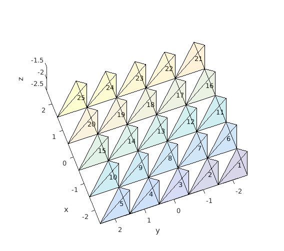
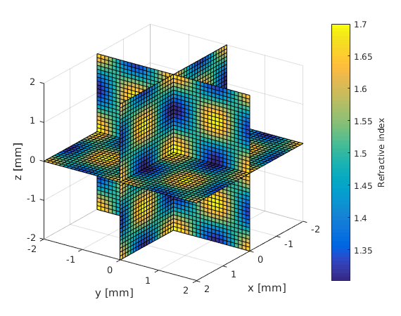
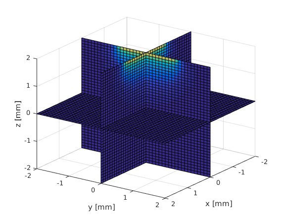

Working with voxel fomat
Often imaging data is provided in voxel format. However, as ValoMC uses tetrahedrons as the basis elements, the data are not directly compatible. This example demonstrates how to move between the two formats.
Contents
Creating a rectangular 3d mesh
To create a mesh that can be easily mapped to a voxel grid the function createGridMesh can be used
clear all; x_arr = -2:1:2; y_arr = -2:1:2; z_arr = -2:1:2; vmcmesh = createGridMesh(x_arr, y_arr, z_arr); % function provided by ValoMC nvoxels_total = length(x_arr)*length(y_arr)*length(z_arr); voxels_in_a_yx_slice = length(y_arr)*length(x_arr);
Visualization of the mesh
The structure of the mesh is similar as in the 2d version (see pixeltest.m). Each voxel consists of 6 tetrahedrons. Vectors x_arr, y_arr and z_arr contain the center of each voxel. The elements 1 to nvoxels_total contain the first tetrahedron in a voxel, nvoxels_total to 2*nvoxels_total the second and so on. The elements are ordered in the same fashion as the coordinates in meshgrid i.e. Y ascends first, then X and finally Z. Illustration of the element indices is given in the figure below.
tetramesh(vmcmesh.H(1:voxels_in_a_yx_slice,:),vmcmesh.r, 'FaceAlpha', ... 0.1); hold on; xlabel('x'); ylabel('y'); zlabel('z'); % draw the element numbers for i=1:voxels_in_a_yx_slice element_center = (vmcmesh.r(vmcmesh.H(i,1),:) + vmcmesh.r(vmcmesh.H(i,2),:) ... + vmcmesh.r(vmcmesh.H(i,3),:) + vmcmesh.r(vmcmesh.H(i,4),:)) * 0.25; text(element_center(1), element_center(2), element_center(3), num2str(i)); end view(-110,50); snapnow; hold off; % Create a finer mesh x_arr = -2:0.1:2; y_arr = -2:0.1:2; z_arr = -2:0.1:2; vmcmesh = createGridMesh(x_arr, y_arr, z_arr); % function provided by ValoMC vmcmedium = createMedium(vmcmesh);
Create an anisotropic parameter distribution
[X,Y,Z] = meshgrid(x_arr,y_arr,z_arr); % Matlab function F = 1.3+cos(X*3).*cos(Y*3).*cos(Z*3)*0.2+0.2; slice(X, Y, Z, F, 0, 0, 0); xlabel('x [mm]'); ylabel('y [mm]'); zlabel('z [mm]'); c=colorbar; c.Label.String = 'Refractive index'; view(125,25); snapnow;
Accessing elements using one dimensional indexing
Note that since there are six times as many tetrahedrons as there are grid cells, vmcmedium.absorption_coefficient is six times bigger than F A complete assignment can be achieved by repeating the array F six times
vmcmedium.scattering_coefficient = 1.0; vmcmedium.absorption_coefficient = repmat(F(:),6,1); % repeat six times vmcmedium.scattering_anisotropy = 0.9; vmcmedium.refractive_index = 1; vmcboundary = createBoundary(vmcmesh, vmcmedium); % create a boundary for the mesh % Create a light source lightsource = findBoundaries(vmcmesh, 'direction', [0 0 0], [0 0 10], 1); vmcboundary.lightsource(lightsource) = {'cosinic'}; solution = ValoMC(vmcmesh, vmcmedium, vmcboundary);
Initializing MC3D... Computation uses 16 threads Computing... ...done Done
Visualize the solution
TR = triangulation(double(vmcmesh.H),vmcmesh.r); % create a matlab % triangulation object % from the mesh locations = [X(:) Y(:) Z(:)]; % form a 2D matrix from all % the grid points indices = pointLocation(TR,locations); % query the indices of the % tetrahedrons at grid % points indices(isnan(indices)) = 1; % set the grid points that % do not belong to the mesh % to point at the first % element % get the values on a grid grid_fluence = reshape(solution.element_fluence(indices),size(X)); slice(X, Y, Z, grid_fluence, 0, 0, 0); xlabel('x [mm]'); ylabel('y [mm]'); zlabel('z [mm]'); view(125,25); snapnow;
Accessing elements using three dimensional indexing
Optionally, the medium can be defined using three-dimensional indexing. If three dimensional indexing is used, ValoMC will assume that createGridMesh has been used to create the mesh. In addition to the solution.element_fluence, ValoMC will return solution.grid_fluence, which represents the fluence in each voxel. It is calculated as a sum of the tetrahedrons in a grid cell.
clear vmcmedium; clear vmcboundary; vmcmedium.scattering_coefficient = 1.0; vmcmedium.absorption_coefficient = F; %refractive index is now a three dimensional array vmcmedium.scattering_anisotropy = 0.9; vmcmedium.refractive_index = 1; vmcboundary = createBoundary(vmcmesh, vmcmedium); lightsource = findBoundaries(vmcmesh, 'direction', [0 0 0], [0 0 10], 1); vmcboundary.lightsource(lightsource) = {'cosinic'}; solution = ValoMC(vmcmesh, vmcmedium, vmcboundary);
Initializing MC3D... Computation uses 16 threads Computing... ...done Done
Visualize the solution as a voxel map
Since 3D array was used to define the scattering coefficient, solution returned contains the field grid_fluence
slice(X, Y, Z, solution.grid_fluence, 0, 0, 0); xlabel('x [mm]'); ylabel('y [mm]'); zlabel('z [mm]'); view(125,25); hold snapnow;
Current plot held